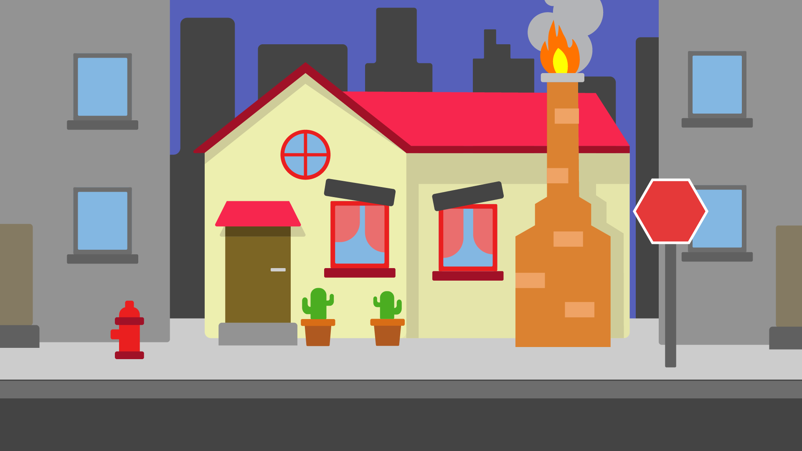

La pregunta de partida fue simple: ¿cómo sería una casa si tuviera la personalidad de Ira? En lugar de dibujar al personaje, el reto era traducir sus cualidades (su temperamento explosivo, su impaciencia y su característico rojo) a un objeto cotidiano, y lograr que cualquiera reconozca la emoción sin ver al personaje.
Toda la escena se construyó como ilustración vectorial en Adobe Illustrator. Cada rasgo de la casa responde a un rasgo del personaje:

Con la ilustración separada por capas, llevé cada elemento a After Effects para animar la construcción de la casa: las piezas van apareciendo y encajando una a una hasta formar la escena completa, de modo que la personalidad de la casa se revela poco a poco.
Una pieza que combina ilustración, diseño de personaje aplicado a la arquitectura y motion graphics para contar una emoción a través de un objeto.
Ver en YouTube